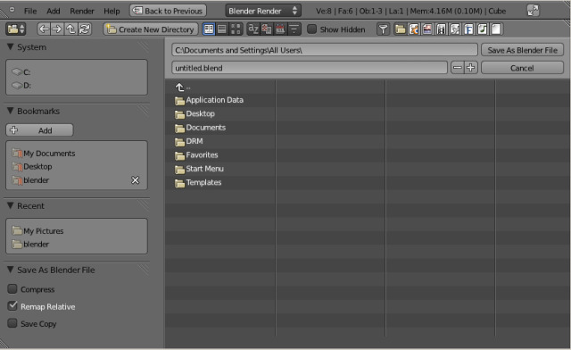

保存文件¶
参考
编辑器: 信息
菜单: 文件
当地有很多你可以使用Blend文件保存到您的硬盘的方法稍有不同:
- Save
Ctrl-S,Ctrl-W 将现有的Blend文件保存在本身。
- Save As
Ctrl-Shift-S,F2 选择要保存到Blend的文件。
- Save Copy
Ctrl-Alt-S 选择要保存的Blend，但是返回到编辑原始文件完成后的文件。这可以用来保存当前的工作状态的备份而不修改原始文件。
If the file name does not end with .blend, the extension is automatically appended.
If a file with the same given name already exists,
the text field will turn red as a warning that the file will be overwritten.

小技巧
Use the plus or minus buttons to the right of the file name,
or NumpadPlus, NumpadMinus to increase/decrease a number at the end of the file name
(e.g. changing file_01.blend to file_02.blend).
选项¶
The save options appear in the operator panel.
- 压缩文件
当启用时，保存的文件将更小，但需要较长时间保存和加载。
- 更新相对路径
此选项来重新映射经过: doc: ‘相对路径’ (如链接的库和图像) 在一个新的位置保存一个文件时。
- 保存副本
此选项保存一个副本的实际工作状态，但并不使保存的文件处于活动状态。
- 老式网格格式
- Save the blend-file, but ignore faces with more than four vertices (“Ngons”) so that older versions of Blender (before 2.63) can open it.
参见